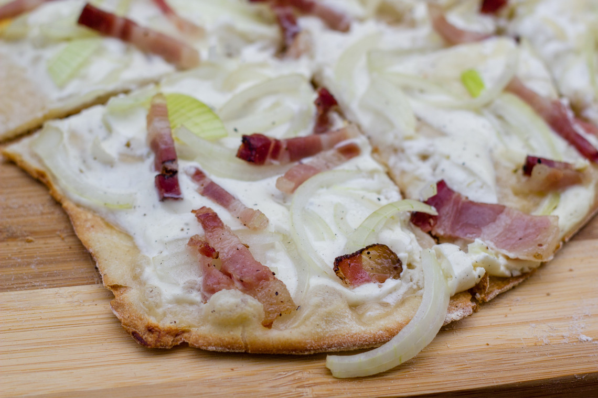

Flammekueche

Description
I am not Alsacian but this is my attempt at emulating the most famous Alsacian dish (no, not the sauerkraut but the Flammekueche). You can add a strong cheese such as Munster or whatever you have under the hand to add some flavour.
This recipe can also be done with mushrooms instead of lardons for a vegetaian Flammekueche.
Ingredients (for 1 person)
- One Flammekueche crust (a thin pizza crust)
- 100g of Crème Fraîche
- 150g of lardons
- One white onion
- Munster or Gruyère or any other strong cheese
Steps
- Chop the onions in thin slices.
- Spread the Crème faîche on the crust, add the lardons and onions on top, evenly spread out.
- Put in the oven at 200° heat for 10 minutes.
- Add the Munster, Gruyere or alternative and put it back in the hot oven for 5 more minutes.
- Cut it with a pizza cutter and enjoy you creation 🍕